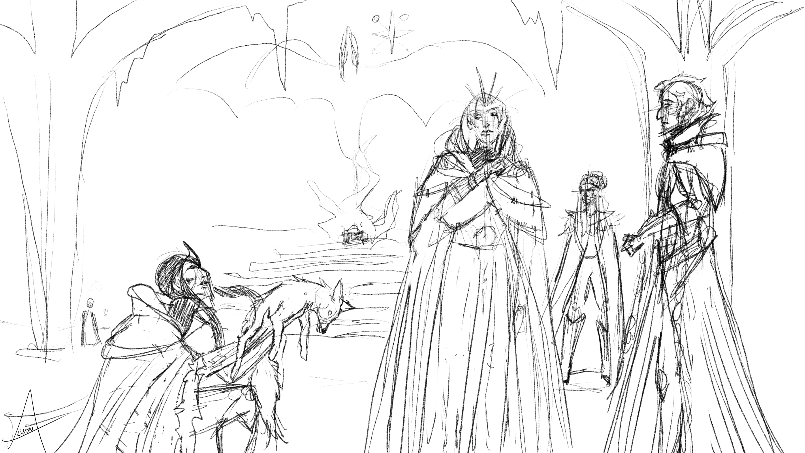
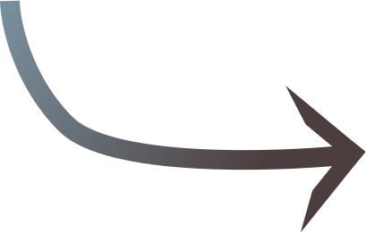
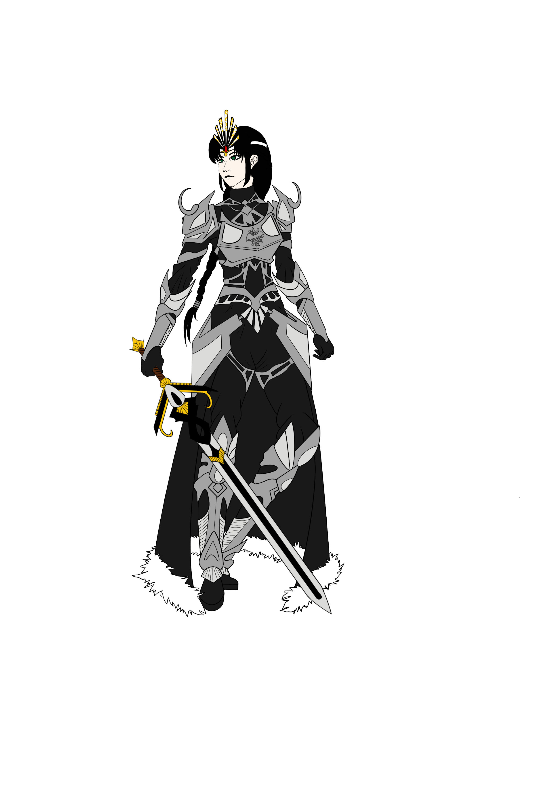
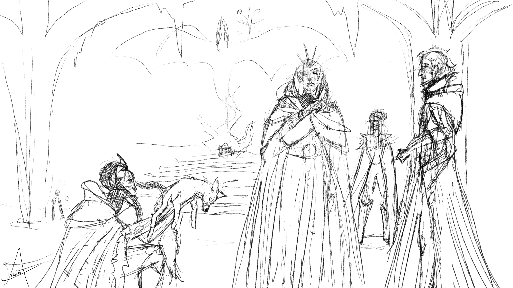
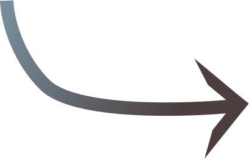
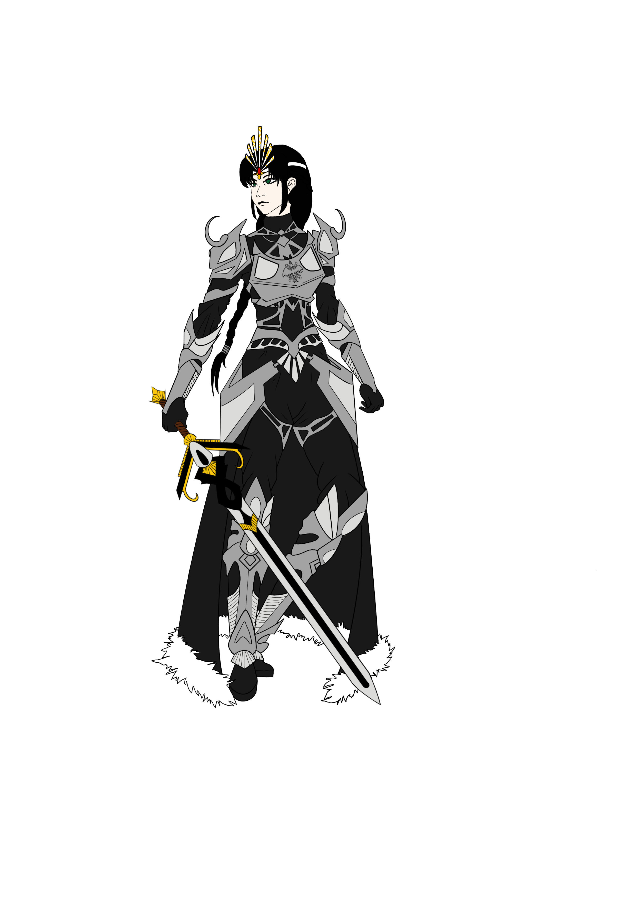

I am currently working on my skills on digital art. I mostly use Procreate so I am more experienced on it. I am trying constantly to improve my style in digital. I recently started trying Krita for an art report after an internship !
This one work is an illustration I created for my original story ‘The Mist Lands’ you must have see in the home page. It portray a woman I named Gaëlyn and a man named Alérion. Even though I would like to, I will not tell you the story, it would be a shame !
I worked many hours on the stained glass window behind, with coal like brush. The black brick wall is made with another type of pencil, all by hand.
 





This one is a try. I wanted to attempt a digital drawing without liner, to have a sort of painting effect. Also I wanted to seek a better way of doing the background. The scene also represents a place and characters of my original story !

Here I wanted to try out some lighting techniques on my character, Piti, and on the texturing of the blood creatures that she creates. I also worked with many layers on the snow texturing.